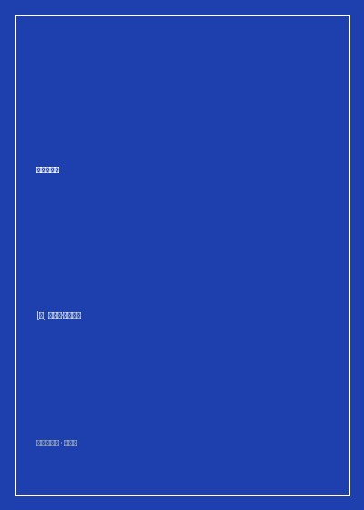

《发展心理学》

总体观点
发展心理学探索的核心命题是：‘人类个体是如何从受精卵细胞这一微小起点，演变成为具备复杂语言、理性思维、道德伦理与自我意识的成年人的？’谢弗教授跨越传统学派的门户之见，系统整合了生物遗传决定论、环境学习论与文化历史社会建构论三大支柱，立论：人类个体的发展是一个漫长而连续的‘遗传基因潜能与后天生态环境（Ecological Systems）之间复杂双向动力学相互作用’的终身过程。
认知与语言的发展构成了心智觉醒的飞跃阶梯。皮亚杰（Jean Piaget）的发生认识论揭示了儿童通过‘图式同化与顺应’经历感知运动阶段、前运算阶段、具体运算阶段直至形式运算阶段的四重飞跃；维果茨基（Lev Vygotsky）则以其深刻的社会文化历史学派视角，提出了‘最近发展区（Zone of Proximal Development，ZPD）’与教学支架理论，阐明高级心智功能绝非婴儿单打独斗的孤岛产物，而是深植于同成年人与文化符号工具的互动脚手架之中。
社会性依恋与道德内化是塑造健康自尊与社会适应的核心基石。鲍尔比（John Bowlby）与安斯沃斯（Mary Ainsworth）的‘陌生情境实验’确立了安全型、回避型与焦虑矛盾型依恋模式对个体终生人际信任关系的深远锚定；科尔伯格的三水平六阶段道德认知模型，则展示了人类道德判断如何从前习俗水平的避罚利己，蜕变走向基于普遍伦理原则与良知的圣洁高度。全书为家庭教育、学校教学与个体自我疗愈提供了坚实的科学航标。
核心观点
-
1. 客体永久性（Object Permanence）与心智觉醒
在8个月之前，婴儿处于‘眼不见即为不存在’的前认知状态（玩具用毯子盖住婴儿便认为它永久消失了）；在8至12个月期间，婴儿发展出客体永久性，明白物体即使脱离自己的视线依然独立客观存在于外部物理世界中，标志着心理表征能力的伟大破土。
演示皮亚杰经典的‘A非B错误’实验：当实验者多次将玩具藏在地点A并让婴儿成功找出后，当着婴儿的面将玩具移到地点B藏匿，九个月大的婴儿依然执拗地去地点A翻找，展示了动作图式与客观物理表征之间的过渡阶段。 -
2. 陌生情境测验与母婴依恋的三重密码
玛丽·安斯沃斯设计了包含母亲短暂离开、陌生人进入与母亲重返的八个标准化情景。母亲重返时，‘安全型’婴儿主动寻求拥抱抚慰并迅速恢复玩耍；‘回避型’婴儿冷漠无视母亲；‘焦虑矛盾型’婴儿则一边尖叫哭闹一边推开母亲，展示早期照料敏感度对心理安全感的决定性塑造。
长期追踪研究证实：在婴儿期形成安全型依恋的孩子，在青春期展现出显著更高的同伴社交魅力、自信心与面对学业挫折时的抗挫情绪恢复韧性。 -
3. 维果茨基‘最近发展区’与脚手架教学
儿童的发展存在两个水平：独立解决问题的实际水平，与在成人指导或有能力的同伴合作下所能达到的潜在水平。两者之间的潜在空间即为‘最近发展区（ZPD）’。教育者的艺术在于搭建‘脚手架（Scaffolding）’，在孩子能力边缘提供精准微小辅助，并在孩子能力长成后悄然撤去支架。
父亲教三岁孩子拼七巧板：不替孩子代劳，也不完全撒手不管，而是在旁边指着一块三角形引导提问‘你看这个尖角是不是和上面的小房子屋顶很像？’孩子在启发下恍然大悟拼上，心智能力获得实质跃升。 -
4. 守恒实验与儿童具体运算的逻辑破局
前运算阶段（2-7岁）儿童受到‘中心化思维与不可逆性’局限：将矮胖杯里的牛奶倒入细高杯时，孩子会斩钉截铁声称‘细高杯里的水更多，因为水位更高’。唯有在7岁左右进入具体运算阶段，大脑获得‘可逆性与守恒概念’，才能看穿表象感知欺骗、领悟物理质量恒定。
把两团完全相同的橡皮泥捏成球，在儿童注视下将其中一团揉成长条泥鳅：前运算儿童坚信长条泥鳅泥巴更多，而具体运算儿童则微笑解释‘你只是把它拉长了，只要搓回去它们还是一样多’。 -
5. 海因茨偷药与科尔伯格道德发展六阶段
海因茨的妻子患绝症濒死，药剂师垄断天价抗癌药索价两千美元，海因茨筹借无门只得砸破药店偷药救妻。科尔伯格以此两难伦理故事测试不同年龄段受试者，评判的核心不是回答‘应不应该偷’，而是考察其‘做出该判断背后的论证理由’。
前习俗水平儿童认为‘不该偷，因为会被警察抓住坐牢’；习俗水平青少年认为‘应该偷，因为好丈夫必须救妻子，否则邻居会唾弃他’；后习俗原则水平哲人则回答‘必须偷，因为人的生命神圣价值高于世俗法律保护的财产私有权’。
全书结构
-
第一篇 发展心理学导论与研究方法
界定生命全程发展观，梳理纵向研究、横断研究与顺应序列设计的实证科研工具，剖析先天遗传与后天教养论战的历史脉络。
展示双生子收养研究设计（分开抚养的同卵双胞胎）：通过对比智商与人格特质的相似度，精确剥离基因遗传度（Heritability）与共享家庭环境方差。 -
第二篇 生物学与生理发展基础：从受精卵到婴儿期
探讨染色体畸变、产前致畸因子（酒精/药物）、新生儿原始反射（抓握/吸吮/步态反射）、脑神经髓鞘化与感知觉运动发展里程碑。
深入拆解吉布森‘视崖（Visual Cliff）’实验：用带有棋盘格纹理的透明玻璃板测试婴儿深度知觉，证明刚学会爬行六个月的婴儿已具备本能的高空跌落恐惧感知。 -
第三篇 认知与语言发展：心智的理性重构
全景深入皮亚杰发生认识论四大阶段，对比维果茨基社会文化历史学派，解析乔姆斯基先天语言习得装置（LAD）与儿童早法语音语法发展。
分析两岁幼儿普遍出现的‘过度规则化（Overregularization）’语言现象（如将goed误当成went），证明儿童并非简单鹦鹉学舌模仿成人，而是在主动建构内部语法规则体系。 -
第四篇 社会性与人格发展：从依恋到自我认同
涵盖气质类型（易养型/难养型/迟缓型）、安斯沃斯母婴依恋、性别角色社会化、班杜拉攻击性观察学习，以及埃里克森自我同一性确立危机。
详细复盘班杜拉著名的‘充气波波娃娃（Bobo Doll）’实验：目睹成年人对充气娃娃拳打脚踢的幼儿，在随后的玩耍中自发模仿并升级了暴力攻击行为。 -
第五篇 发展的生态环境：家庭、同伴与未来人生
总结全书，应用布朗芬布伦纳社会生态系统理论（微观/中介/外层/宏观系统），评估父母教养方式（权威型/专制型/放任型）与数字媒体对青少年的深远塑造。
大样本纵向数据证明：‘权威型教养（高要求且高回应、给予充分民主解释与无条件爱）’培养出的孩子，在自律性、学业成就与人际情商上全面显著碾压专制型与放任型家庭。